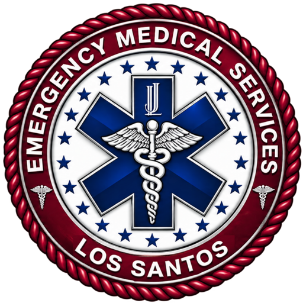
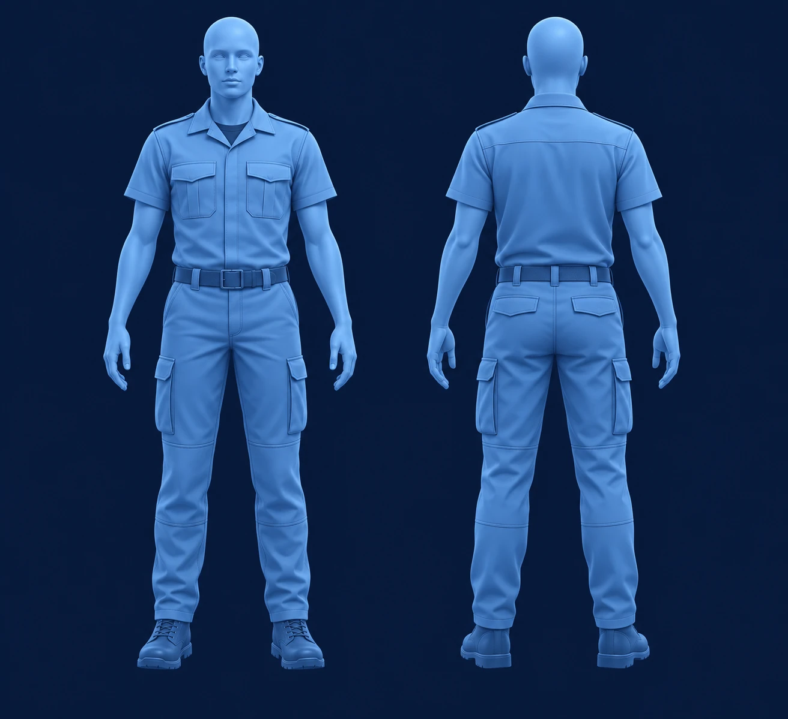

EMS · LOS SANTOS
DOSSIER TRAUMATOLOGIQUE
Emergency Medical Services — Los Santos
Évaluation du patient
Sélectionnez une zone et documentez uniquement les éléments observés.
Dossier en cours
01Localisation
Face · Dos
Choisissez une zone sur le mannequinAucune zone sélectionnée
02Blessures et gravité
Type de blessure
Détails de la blessure
Gravité
03État du patient
04Diagnostic
05Soins / pré-opération
06Opérations effectuées
Chronologie des clicsAction personnalisée
Aucune opération ajoutée.
07Prescription
Médicaments et produits à prescrire
Outil fictif de documentation. Les libellés ne constituent pas des consignes médicales.